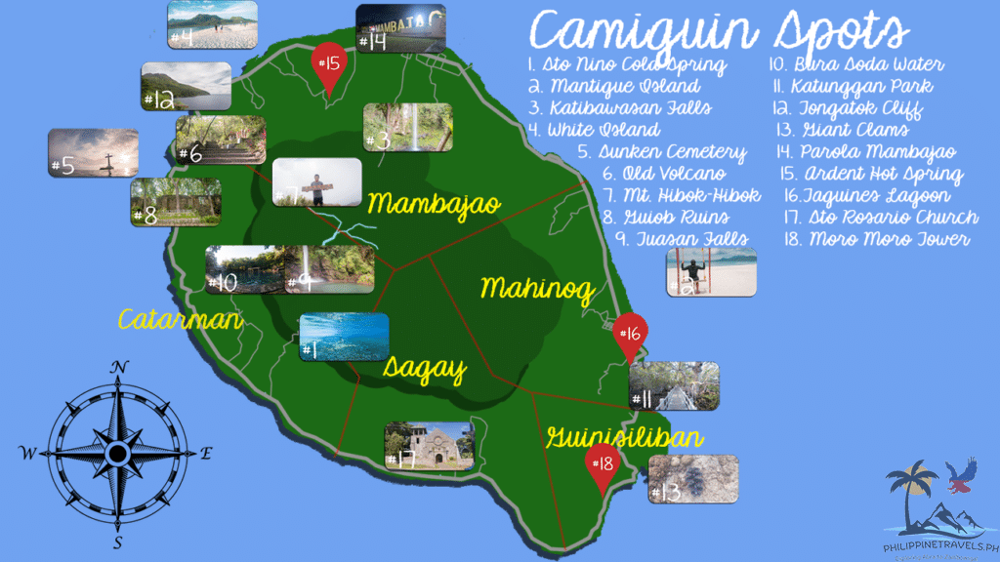

Navigating Camiguin
Camiguin is one of the easiest islands in the Philippines to navigate, thanks to its single circumferential road that encircles the entire island. The road covers approximately 64 kilometers and passes through all five municipalities: Mambajao, Catarman, Guinsiliban, Mahinog, and Sagay. All major attractions are accessible directly from this road or via short side routes.
The provincial capital, Mambajao, is located on the northern coast and serves as the main hub for accommodation, restaurants, government services, and transportation. The Benoni port, located on the eastern coast near Mahinog, is the main entry point for ferries arriving from Balingoan on the mainland. From Benoni, most resorts and attractions are within 30–45 minutes by vehicle.
Map of Camiguin

Key Landmarks
Major landmarks include White Island (off Yumbing, Mambajao), Ardent Hot Springs (Mambajao), the Sunken Cemetery (Catarman), the Old Gui-ob Ruins (Catarman), and Katibawasan Falls (Mambajao).
Ferry Port
The Benoni port in Mahinog is the main gateway to the island. From here, tricycles and habal-habal motorcycles are available to take you to your resort or destination anywhere on the island.
Circumferential Road
The 64-kilometer ring road encircles the entire island and passes through all major towns and attractions. A full circuit by motorcycle takes approximately 2–3 hours depending on stops.